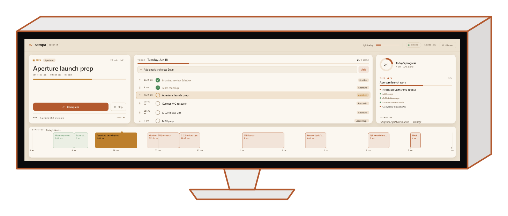
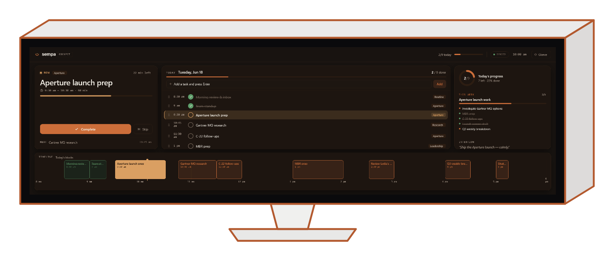
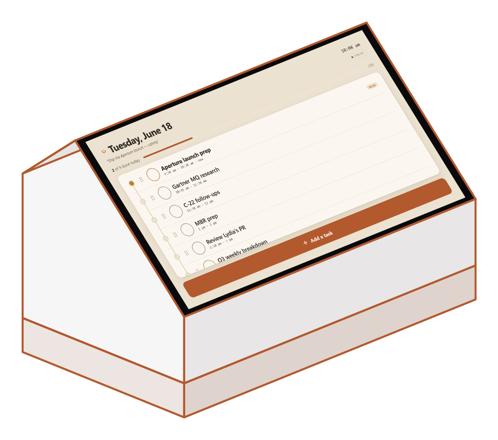
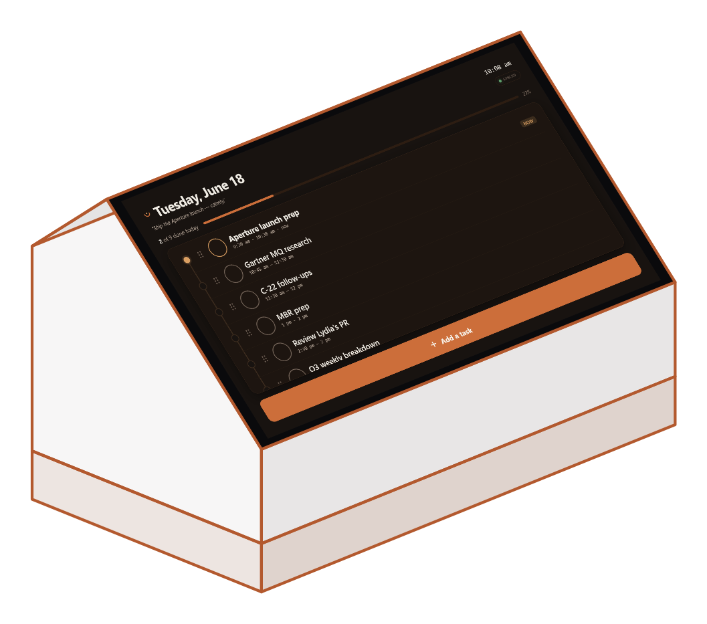

Companions
Sempa is one server you host yourself — and more than one way to meet your day. Beyond the desktop, web and mobile apps, two companions give today a permanent home: a glanceable cockpit for an ultrawide display, and the Sempa Dock, a small desk appliance you build yourself.
Sempa has a dedicated cockpit mode built for ultrawide secondary displays like the 2560×720 Corsair Xeneon Edge. Park it below your main screen and it becomes mission control for the day — a calm glance at what's now, that expands into a full mouse-and-keyboard view when you want to drive.


Quiet by default — just the next thing and your progress. Expand into the full cockpit when you want to plan, reorder and quick-add without leaving the Edge.
The task in progress gets the biggest card on screen — its timer, what's next, and a one-press Complete. The thing you're doing is never more than a glance away.
Your time-blocks laid across the day along the bottom, calendar events and tasks in one strip — so the shape of the day reads at a distance.
Cockpit mode is part of the Sempa desktop app — no extra install, no extra cost. Point the Edge at your server and switch any window into the cockpit.
The Sempa Dock is an always-on touch device for your desk — a Raspberry Pi that boots straight into today. No login, no app to open: just today's tasks strung on the day thread, big enough to touch. It makes your plan a physical object you glance at and tap, like a paper list that keeps itself current.
Tasks hang on the day thread — a single spine for the day you can run a finger down. Add, check and reorder by touch; the on-screen keyboard is right there when you need it. There's nothing to manage, because there's nothing else on the screen.
Leave it for a while and it eases into an ambient face — the date, your next task and your progress, dimmed and serene like a desk clock. A single touch brings the full list back.


Build a reproducible Raspberry Pi OS image and flash a card. It boots into a finished Sempa — no setup wizard, no desktop, no console flashes. The dock layout is the same app, in dock mode.
On first run the Dock shows a short pairing code. Approve it from Settings → Paired devices in any signed-in Sempa app. That's the entire setup.
Pairing mints a device token that can only read today and this week and add or check tasks — never your settings, integrations or backups. No account password ever lives on the device, and you can revoke it anytime.
The Dock is something you build yourself from a Raspberry Pi and a touch panel — there's no kit to buy. The dock layout ships inside the app, and the image recipe, kiosk config and full build guide are open in the repository.
An honest heads-up: this is a maker project. You'll flash an SD card and assemble a Pi. If that's not your thing, the cockpit and the regular apps cover the same day with no hardware at all.
Check a task on the Dock and the cockpit ticks over; finish one in the app and the Dock's thread updates too. Every surface is a client of the same server you host yourself — your data never leaves your machine.